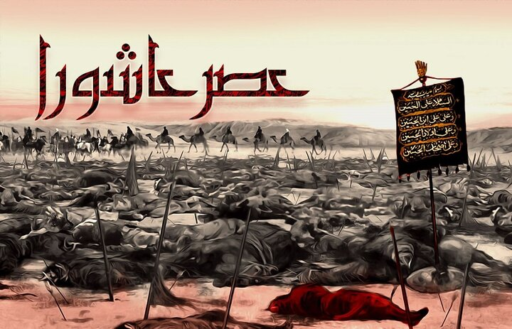
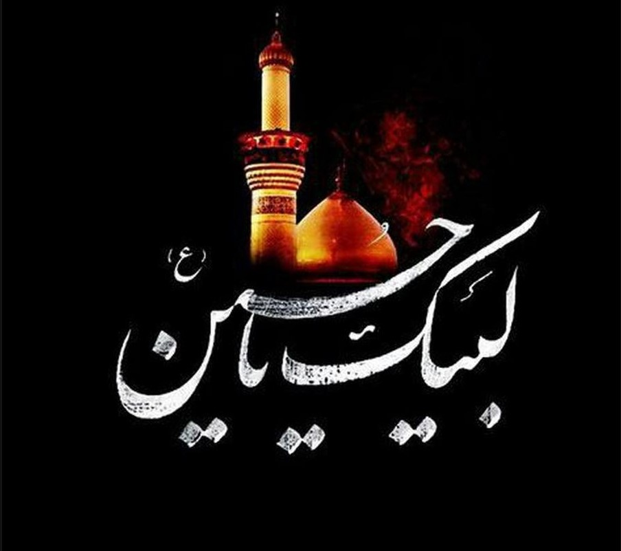
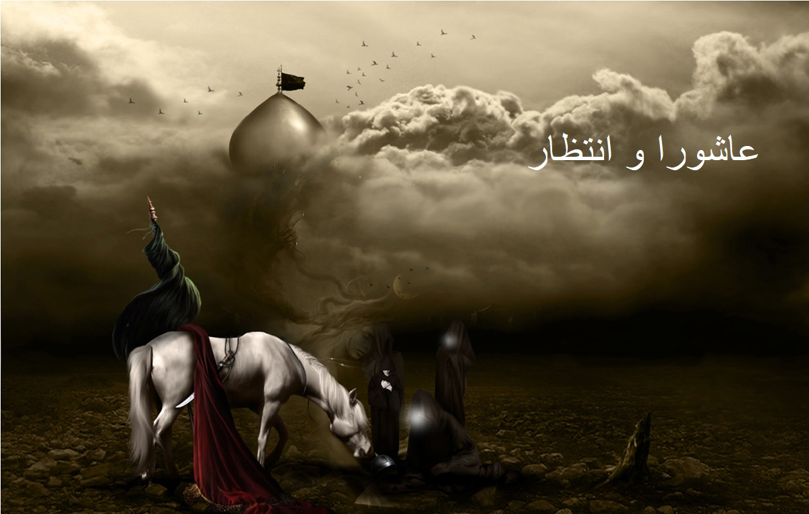

حسین بن علی بن ابیطالب ملقب به اباعبدالله و سیدالشهدا (متولد سال چهارم
قمری – شهادت سال ۶۱ قمری) سومین امام شیعیان هستند. ایشان که در میان
پیروان و شیعیان به امام حسین (ع)، اباعبدالله و سید شهدا شهرت دارد، در
حادثه کربلا به شهادت رسیدند. امام حسین (ع) دومین فرزند امیرالمومنین (ع)
و فاطمه زهرا (سلام الله) و همچنین نواده نبی مکرم اسلام (صلی الله)
میباشد که بعد از دوران امامت برادر بزرگوارشان امام حسن مجتبی (ع) برای
۱۱ سال امامت و رهبری جامعه اسلامی را عهده دار بود. طبق مستندات تاریخی که
شیعه و اهل سنت در آن اتفاق نظر دارند، حضرت محمد صلی الله در زمان تولد
امام حسین، در خصوص شهادتش سخن گفته و او را حسین نام نهاد. رسول الله
علاقه وافری به حَسَنَین (امام حسن و امام حسین) داشته و همه مسلمانان را
نسبت به محبت و دوست داشتن آن دو بزرگوار توصیه میکرد. امام حسین (ع) در
زمره اصحاب کِساء و از شرکتکنندگان در جریان مباهله و همچنین اهل بیت
پیامبر اسلام می باشد که آیه تطهیر از طرف خداوند بلند مرتبه در مورد آنها
فرود آمد. احادیث بسیاری از پیامبر اسلام صلی الله نسبت به بزرگواری و
فضائل نیک امام حسین (ع) بیان شده که میتوان به:
«حسن و حسین سرور جوانان بهشتاند»
«حسین چراغ هدایت و کشتی نجات است»
«حسین از من است و من از حسینم»
اشاره کرد. از ایام زندگانی امام سوم شیعیان که به مدت سی سال پس از شهادت
حضرت محمد صلی الله بوده، گفتارهای ناچیزی دیده میشود. او در زمان زمامداری
امیرالمومنین حضرت علی ع دوشادوش پدر حضور داشته و در نبرد های آن زمان
شرکت می کرد. پس از آن در دوران امامت امام حسن مجتبی ع تابع و حمایتگر
ایشان بوده که رویکرد صلح با معاویه را تصریح نمود. امام حسین بعد از به
شهادت رسیدن امام حسن مجتبی تا هنگامی که معاویه در قید حیات بوده، نسبت به
توافقنامه برادرش پایدار بود. او در جواب به نامه های عدهای از شیعیان
کوفه که جهت قبول امامت ایشان و جنگ در مقابل بنی امیه، آمادگی خود را بیان
می کردند، آنها را به شکیبایی تا هنگام مرگ معاویه دعوت می نمود. بعد از
وفات معاویه، امام حسین ع پیمان و عهد با یزید را جایز و روا ندانسته و با
آگاهی از دستور یزید جهت کشتن ایشان، چنانچه از انجام بیعت اجتناب کنند،
مصمم شدند در ۲۸ رجب سال ۶۰ قمری از شهر مدینه به سمت مکه عازم شود. در مدت
زمان چهار ماهه اقامت ایشان در مکه، نامه های بسیاری از جانب اهالی کوفه
جهت قبول حاکمیت ایشان ارائه گردید و بعد از آنکه امام حسین با فرستادن
سفیرش به نام مسلم بن عقیل به جانب کوفه، موافقت و همراهی مردم کوفه را
تصدیق نمود، در تاریخ هشتم ذی الحجه به همراه همه خانواده و بستگان رهسپار
شهر کوفه گردید. این امر تا قبل از آن بود که از عهد شکنی اهالی کوفه و
شهید کردن مسلم اطلاع یابد. هنگامی که فرماندار کوفه به نام ابن زیاد در
جریان سفر اباعبدالله الحسین به جانب کوفه قرار گرفت، سپاهی مجهز را به
جانب او روانه کرد. بعد از آنکه لشکر حر بن یزید مسیر را بر او بسته و از
ادامه راه ممانعت نمود، امام حسین ناچار شد به سمت کربلا تغییر مسیر دهد.
سال قمری مانند سال شمسی 12 ماه دارد و هر ماهی دارای یک نام است. اولین ماه سال قمری ماه محرم است، ماهی که در دوران جاهلیت جنگ و خونریزی در آن ممنوع بود ولی به فرموده امام رضا (ع) در همین ماه خون خاندان ائمه(ع) را حلال دانسته و دست به کشتار زدند و امام سوم ما شیعیان حسین (ع) و افراد باوفای وی را به شهادت رساندند. در سال 61 هجری امام حسین علیه السلام به دلیل دعوت کوفیان، وارد کوفه شدند و اهل کوفه به وی بی وفایی کرده و در دشت کربلا در روزهای نهم و دهم محرم او و یارانش را به شهادت رساندند. عاشورا برگرفته شده از «عشر»، به معنای ده است و عاشورا به معنای دهم می باشد. اطلاق کلمه «عاشورا» بر دهم ماه محرم، پس از شهادت امام حسین و یاران آن حضرت، صورت پذیرفته است و در دوره پیش از اسلام به دهم ماه محرم، عاشورا نمی گفتند. کاروان اباعبدالله الحسین علیه السلام در روز دوم محرم، در سرزمین مقدس کربلا فرود آمد و تا روز عاشورا در آن سرزمین بودند؛ اما چون حوادث مهم کربلا در روز نهم و دهم ماه محرم الحرام اتفاق افتادند، این دو روز را برجسته تر شده، تاسوعا و عاشورا نامیده شدند؛ یعنی نهم و دهم محرم الحرام. در عربی به عدد 10، عشر گفته می شود، اما عشر و یا عاشورا زمانی معنا پیدا کرد که پیامبران و ائمه معصوم، همه در ذکر مصیبت عظما، ذبح عظیم گریستند و این گریهها و مویه کردن تنها مخصوص زمینیان نیست و جِن و مَلِک نیز در آسمان عزادار اهل بیت (ع) نبوی هستند. روایاتی در مورد روز عاشورا بیان شده است و این که عشر از زمانی عاشورا شد که خون خدا در زمین جاری و نهضت حسینی و آزاد خواهی در دشت نینوا به روی نیزه سر داده شد. یکی از وقایع صبح عاشورا کنارهگیری حر بن یزید ریاحی از لشکر عمر بن سعد و پیوستن به اردوگاه حسین (ع) است.
در مورد علل و انگیزه های قیام امام حسین علیه السلام آنچه به اختصار می توان اشاره کرد بدین قرار است: 1- بیعت خواهی یزید: یزید به والی خود در مدینه نوشت: حسین و عبدالله بن زبیر و عبدالله بن عمر را احضار نموده و از آنها بیعت بگیر و اگر بیعت نکردند آنها را گردن بزن و سرشان را برای من به شام بفرست. و امام در جواب فرمود: هنگامیکه امت اسلامی به پیشوایی مثل یزید گرفتار گردد، باید فاتحه اسلام را خواند[1]. و بدین جهت از بیعت با یزید امتناع ورزید. 2- دعوت مردم کوفه از امام(ع) و اقامه حجت بر امام(ع): به جهت اینکه وظیفه امام این است که در صورت آماده بودن زمینه، در جامعه اسلامی حکومت اسلامی را تشکیل دهد و به حسب ظاهر چنین زمینهای آماده بود، چون مردم کوفه با ارسال حدود 12 هزار نامه برای امام(ع) آمادگی خود را برای کمک به امام با لشکر صد هزار نفری اعلان نمودند[2]، معلوم است که اگر امام اجابت نمی فرمود، چه بسا در برابر خدا و امت اسلامی و تاریخ مسئول بوده و مواخذه می گردید. خلافت و حکومت، حق مسلم آن حضرت بوده است، چنانکه فرموده: به جانم قسم امام نیست مگر آن که به کتاب خدا عمل کند و به عدل و قسط رفتار نماید و بر حسب قانون و حق مجازات کند و خود را در مسیر رضای خدا قرار دهد.[3] و روشن است در آن زمان تنها کسی که بتواند همه این شرائط را به طور کامل رعایت نماید، خود امام علیه السلام بوده اند. 3- اصلاح امت و مبارزه با فساد: چنانکه خود حضرت فرمود: انگیزه ام از قیام، اصلاح امت جدم رسول خدا است[4]. و به عبارت دیگر یکی از علل قیام امام حسین(ع) زنده کردن ارزش های اسلامی بوده است. همان ارزش هایی که حکومت اموی سعی می نموده آنها را نابود کند. برخی از ارزش هایی که حکومت بنی امیه سعی در محو آن داشت بدین قرار است: الف- وحدت اسلامی، حکومت بنی امیه از طریق احیای تعصبات قبیله ای و وادار کردن شعرای قبایل بر هجو قبیله رقیب، و نیز از طریق ایجاد اختلاف میان اعراب اصیل و موالی، سعی می کرد ریشه های وحدت اسلامی را متزلزل کند. در حالی که شکوه و عظمت اسلام وابسته به همین وحدت میان امت اسلامی است. ب- حریت: منطق حکومت اموی شمشیر و شکنجه و ترس و ارعاب بود و از این طریق حریت و آزادی و آزادگی را از میان امت اسلامی برداشته بودند ولی امام با شهادت خود درس آزادی و آزادگی به مردم داد. و مردم نیز برای بدست آوردن حریت بعد از شهادت امام حسین علیه السلام قیامهای متعددی برپا نمودند. ج- اخلاق اسلامی و انسانی: چون حکومت فاسد با جامعه و مردم صالح نمی تواند کنار بیاید و حکومت ها باید مردم را همانند خود بسازند، چنانکه خود معاویه پس از پیمان با امام حسن بن علی علنا اظهار داشت که به هیچ یک از شرایطی که در قرار داد به نفع امام حسن بن علی قرار داده شده است عمل نخواهد کرد، عملا دروغ و نیرنگ و فساد را در جامعه ترویج می داد. و لذا امام حسین (ع) می فرماید: همانا سنت رسول خدا(ص) را به دست فراموشی سپردند و بدعت ها را زنده کردند. یا فرمود: شما را به زنده کردن معارف حق و از بین بردن بدعتها دعوت می کنم.[5] خلاصه اینکه در جامعه آن روز فسادی بالاتر از تصدی ظالمین و ستمگران در مناصب حکومتی نبوده است، که در حقیقت ریشه همه فساد و بدبختی در جامعه است. چنانکه امام در برابر لشکر حر فرمود: ای مردم! همانا رسول خدا(ص) فرمود: هر کس سلطان ستمکاری را ببیند که محرمات الهی را حلال می شمارد و با خدا پیمان شکنی می کند، و با سنت و روش رسول خدا مخالفت می ورزد، ولی با او مخالفت نکند بر خداست او را با همان ستمگر محشور گرداند و در جایگاه ستمکاران قرار دهد البته این علت و انگیزه سومی را که بیان داشتیم می توان تحت عنوان وسیع تری به نام «امر به معروف و نهی از منکر» هم جای داد که در بیان امام حسین علیه السلام به عنوان هدف قیامشان طرح شده است آنجا که می فرماید: منظورم (از این قیام) امر به معروف و نهی از منکر است[7]. «مگر نمی بینید که به حق عمل نمی شود و از باطل جلوگیری نمی گردد. (اگر برای تغییر این وضعیت) مومن مشتاق دیدار پروردگارش باشد(و جان خود را فدا کند) شایسته است.»[8] البته علل و عوامل دیگری نیز در حادثه قیام امام حسین وجود دارد که به نوعی به یکی از سه عوامل بر می گردد. مانند طرح ترور امام در مکه. نکته دیگر این که به نظر می رسد علت و انگیزه اصلی قیام امام حسین یک چیز بوده است و بقیه به منزله شاخه ها و زیر مجموعه آن علت اصلی می باشند و آن عبارتست از پاسداری از آیین اسلام و ترویج و گسترش آن در جامعه و تبیین و توضیح معارف آن برای مردم، و چون دین در واقع باز نمود فطرت و سرشت انسان است پس می توان از این هدف تعبیر به «بیداری و آگاهاندن مردم» نمود. چنانکه در زیارت اربعین امام حسین(ع) می خوانیم: (خدایا من شهادت می دهم که امام حسین) خون پاکش را در راه تو به خاک ریخت تا بندگانت را از جهالت و گمراهی نجات دهد.
مهدی (عج)، ادامه حسین علیه السلام است و «انتظار» ادامه عاشورا و برآمده از آن . مهدی (عج)، فرزند حسین علیه السلام است و فرهنگ «انتظار» برآمده از فرهنگ «عاشورا» و انتظار حسین دیگری را کشیدن . این دو پیوندی دیرین و مستحکم با یکدیگر دارند . یکی پشتوانه فرهنگی و زمینه ساز، برای دیگری است; یکی رمز «حیات شیعه » است و دیگری رمز «بقای آن » ; یکی رمز «قیام و به پا خاستن شیعه » است و دیگری عامل «حفظ و استمرار آن » ; «مهدی » علیه السلام وارث عاشورا است; همچنان که «حسین » علیه السلام وارث پیامبران است; عاشورا، دریچه ای به «انتظار» است و انتظار، تجلی آرزوها و آمال کربلا; فرهنگ عاشورا، دستمایه اساسی و مایه شکوفایی و بالندگی منتظران مهدی (عج) در عصر انتظار است . پیوند «عاشورا و انتظار» و «حسین و مهدی » ، پیوند «والد» و «ماولد» و «نور علی نور» است . انتظار، کربلایی دیگر است به وسعت همه جهان و مصاف حق و باطل است در زمانی دیگر; با این تفاوت که این بار، حق پیروز است و چهره باطل، برای همیشه دفن می شود . انتظار همان کربلا است در وسعت همه زمین و در مقطع دیگری از تاریخ . در این مقطع، فکرهای رشید از هر فرقه و ملتی، گلبانگ «دعوت مهدوی » را - که با ساخت و فطرت انسان ها همگون است - لبیک می گویند . انتظار، ثمره کربلا است . بدون کربلا انتظار بی معنا است . یاران مهدی، همه کربلایی اند و در فراز و فرود تاریخ، غربال شده و آبدیده اند . مگر می توان بی عاشورا، انتظاری دیگر داشت؟ انتظار بی عاشورا، انتظار بی پشتوانه است . «عاشورا» انتظار برآورده نشده شیعه است و «انتظار» عاشورای برآورده شده شیعه . حرکتی جهانی و به وسعت آمال همه انسان های تاریخ، پشتوانه و عقبه ای می خواهد به استحکام کربلا که هرگز به سردی و خاموشی نگراید . (1) «انتظار» ادامه عاشورا، غدیر و بعثت است و «ظهور» ، روز فرج و مخرج حسین (2) و ثمره خون او که در شریان تاریخ به جوش آمده است . «انتظار» بشارتی است به حق، بر همه دردها و آلام شیعه در کربلا و تاریخ . مهدی (عج)، همان کسی است که باری را که حسین علیه السلام در مسیر کوفه، در کربلا به زمین گذاشت; به کوفه می رساند . مهدی علیه السلام پرچم افتاده حسین علیه السلام را بر خواهد افراشت و آرمان های بلند او را تحقق خواهد بخشید . مهدی علیه السلام، بذری را که حسین علیه السلام در کربلا کاشت و دیگر امامان آن را بارور کردند و خودش در دوران غیبت به حراست آن همت گماشت، با دستان پرتوانش غرس خواهد کرد . «انتظار و عاشورا» دو بال پرواز شیعه است ; اگر این دو نبود، چشمه «غدیر» می خشکید . این پیوندهای روشن و گویا، از نگاه نامحرمان نیز مخفی نمانده تا آن جا که می گویند: شیعه با دو نگاه همراه است: «نگاه سرخ » و «نگاه سبز» ; عاشورا و ظهور، با الهام از یکی «انقلاب » می کند وبا دیگری آن را «استمرار» می بخشد . (3) برای ما دور ماندگان از صحنه عاشورا، یک راه بیشتر نمانده و آن ثبت نام در کلاس «انتظار» و درآمدن در خیل «منتظران » است که حقیقت انتظار، همان در خیمه حسین علیه السلام بودن است . آنان که در کربلا چکاچک شمشیرها را نچشیدند، باید مرارت «انتظار» را به جان بخرند . «عاشورائیان » ، پیمان خود را به آخر بردند و «مهدویان » با کوله بار فرهنگ شهادت ، چشم انتظارند تا آن عهدی که با خدا و رسول بر پاسداری از حرم و حریم ثار الله بسته اند، به انجام برسانند: «فمنهم من قضی نحبه و منهم من ینتظر»

اگر منتظران، با وظايف خود آشنا نباشند و به آن عمل نكنند، تاريخ تكرار
خواهد شد و همان گونه كه در زمان امام حسين عليه السلام، شيعيان فراوانى
وجود داشتند، ليكن از ميان آنها، تنها 72 نفر به وظيفه خود عمل كردند و لذا
امام حسين عليه السلام تنها ماند و آن چه نمى بايست اتفاق بيفتد، اتفاق
افتاد، در زمان غيبت هم، چنانچه شيعيان به وظايف خود عمل نكنند، امام
زمانشان تنها خواهد ماند و ظهورش به تأخير خواهد افتاد. در اينجا پاره اى
از وظايف شيعه در دوران غيبت را بر میشماریم:
1- معرفتِ امام
2- محبّت به امام: برخى از جلوه هاى محبت از اين قرارند:
- ياد حضرت
- دعا براى سلامتى و ظهور حضرت
- صدقه دادن براى سلامتى حضرت
- تقديم خواست او بر خواست خود
منصور بزرج مى گويد: به امام صادق عليه السلام عرض كردم: اى آقاى من، چه
بسيار از شما ياد سلمان فارسى را مى شنوم؟ فرمود: نگو سلمان فارسى، بگو
سلمان محمدى صلى الله عليه وآله آيا مى دانى چرا بسيار از او ياد مى كنم؟
عرض كردم نه. فرمود: براى سه صفت: 1- مقدم داشتن خواسته اميرمؤمنان عليه
السلام بر خواسته خودش 2- دوست داشتن فقرا 3- دوست داشتن علم و علماء.
- تلاش در كسب رضايت او:
اعمال و رفتار و گفتار منتظر بايستى بر وفق رضاى محبوب باشد. منتظر بايد
ببيند، امام چه مى پسندد. آيا از كار او راضى است يا نه؟ به قول امام
راحل(ره): توجه داشته باشيد كه در كارهايتان جورى نباشد كه وقتى بر امام
زمان عليه السلام عرضه شد، خداى نخواسته، آزرده بشوند و پيش ملايكةاللّه يك
قدرى سرافكنده بشوند كه، اين ها شيعه هاى من هستند. اين ها دوستان من هستند
و بر خلاف مقاصد خدا عمل كردند... بايد ماها و شماها طورى رفتار كنيم كه
رضايت آن بزرگوار را كه رضايت خداست، به دست بياوريم.
- تجديد بيعت (اللّهم اِنى... عهداً و عقداً و بيعة له فى عنقى)(8)
- اشتياق عزيز علىّ أن ارى الخلق ولاتُرى (9)
- اظهار ناراحتى از فراق
3- اطاعت از امام